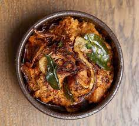

A verdant South Asian paradise, Sri Lanka is dominated by two distinct groups: the majority Sinhalese concentrated in the south, central and west of the island, and the Tamils, based mostly in the north and east. These two cultures have separate languages, traditions and religions, a mosaic of diversity that has also led to distict Sinhalese and Tamil styles of cooking. Many Sinhalese follow the principles of Ayurveda - "food is medicine, medicine is food" - while Tamils say there are six tastes - sweet, sour, bitter, spicy, salty and astringent - and that every meal should be a harmonious balance of all.
Yet there is plenty of common ground: the humble coconut is used universally, as is rice, the staple carbohydrate, and lentils. Curry leaves are a vital part of many Sinhalese and Tamil dishes, too. Vegetables grow so well in the warm, rainy climate that no day passes without a meal that includes juicy tomatoes, fragrant pineapples, jackfruit, aubergines, beans or gourds. And the warm waters of the Indian Ocean provide the island with copious fish and shellfish.
Sri Lankans tend to tuck into hearty breakfasts of string hoppers with curry and sambol relish, generous lunches and smaller uncomplicated dinners in the evening.'Short eats' are small takeaway snacks taken at any time of the day, and sold by shouting vendors in railway carriages and on lively beachfronts; they include fish patties, crunchy lentil vadai and mince rolls.
The classic Sri Lankan meal is rice and curry, a simple-sounding name that belies the thought and detail that goes into its preparation. It consists of a balance of several spiced, colourful curries, perhaps a dahl, and an essential accompaniment of sambol relish or pickle. It's a generous spread, ideal for a dinner party or special occasion; for everyday cooking you'll find that most Sri Lankan dishes make a memorable meal on their own.
") |
 |
|---|---|
| Sri Lankan watalappan (coconut custard with kithul) | Young jackfruit curry |